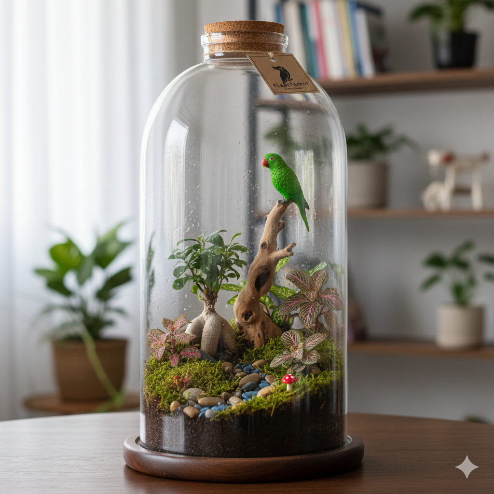
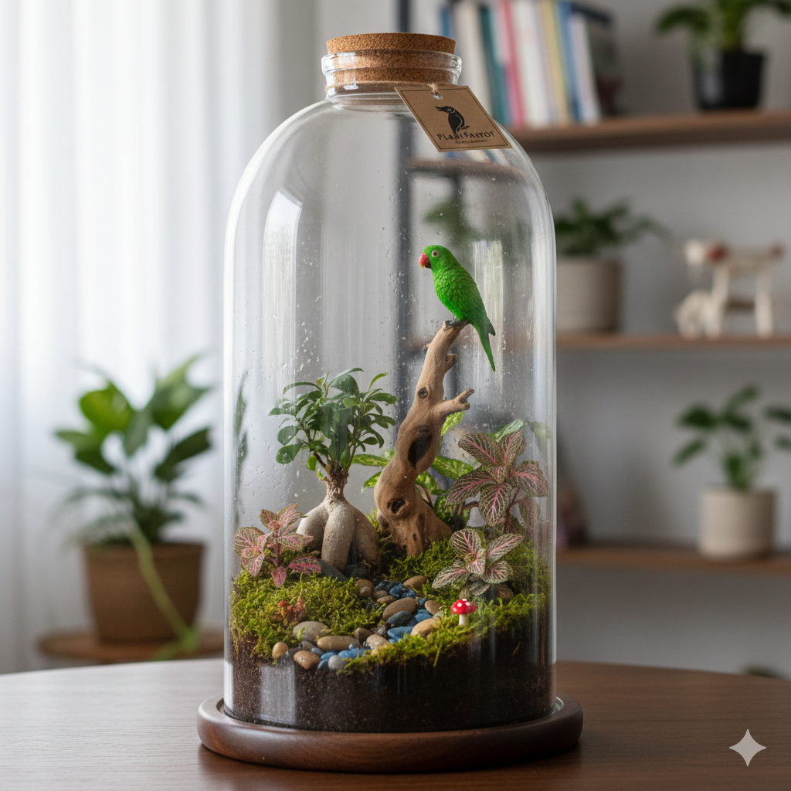

Bienvenidos a nuestro bosque
Cada terrario de PlantParrot es una pieza única y artesanal. Utilizamos plantas seleccionadas para crear pequeños mundos autosostenibles que apenas requieren mantenimiento.
Ecosistemas en miniatura diseñados para llevar la calma de la naturaleza a tu espacio de trabajo u hogar.
Explorar CatálogoCada terrario de PlantParrot es una pieza única y artesanal. Utilizamos plantas seleccionadas para crear pequeños mundos autosostenibles que apenas requieren mantenimiento.
